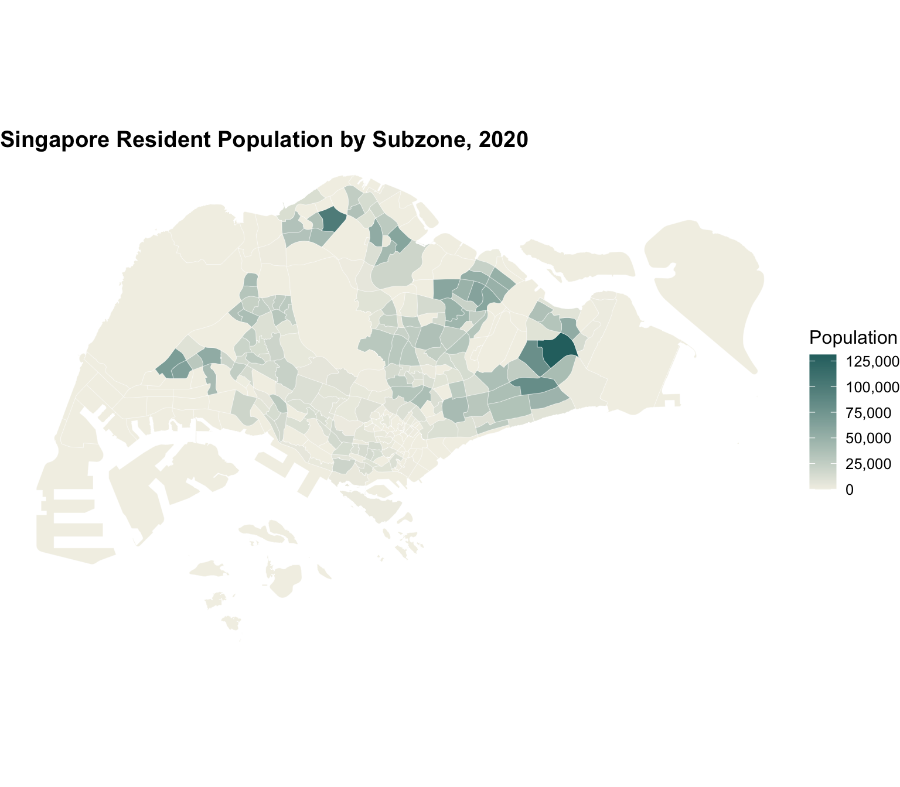
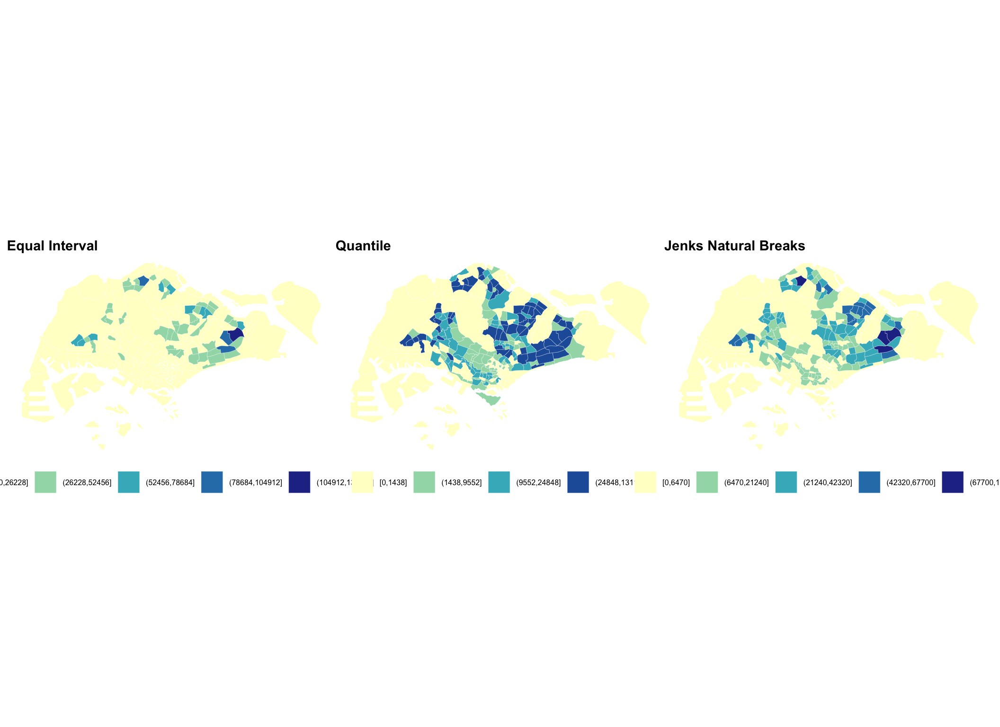
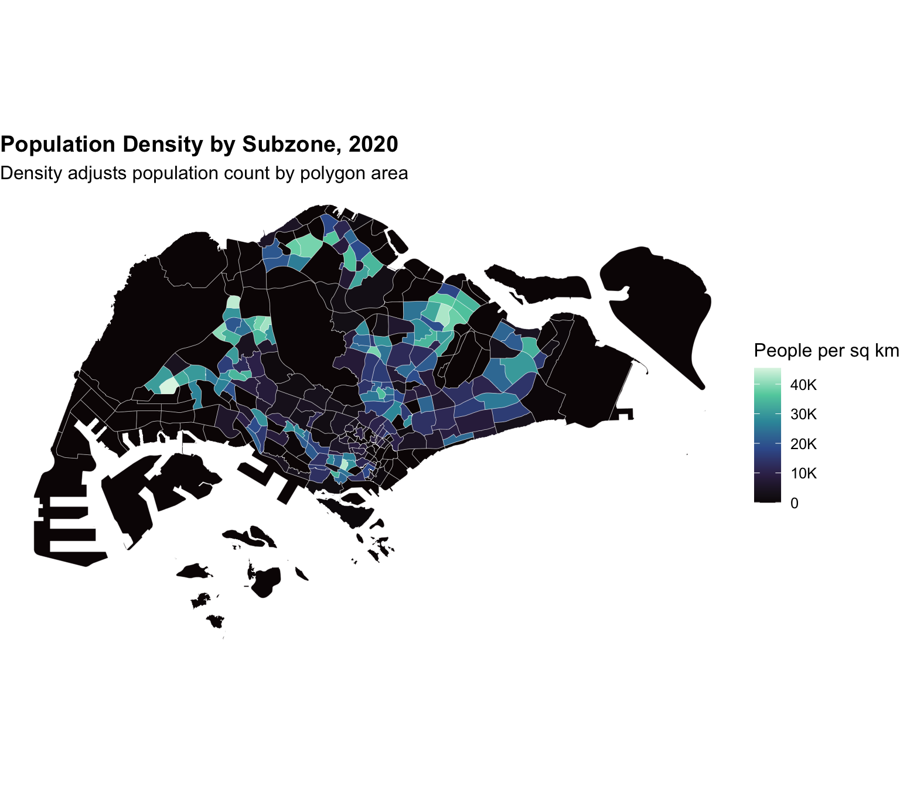
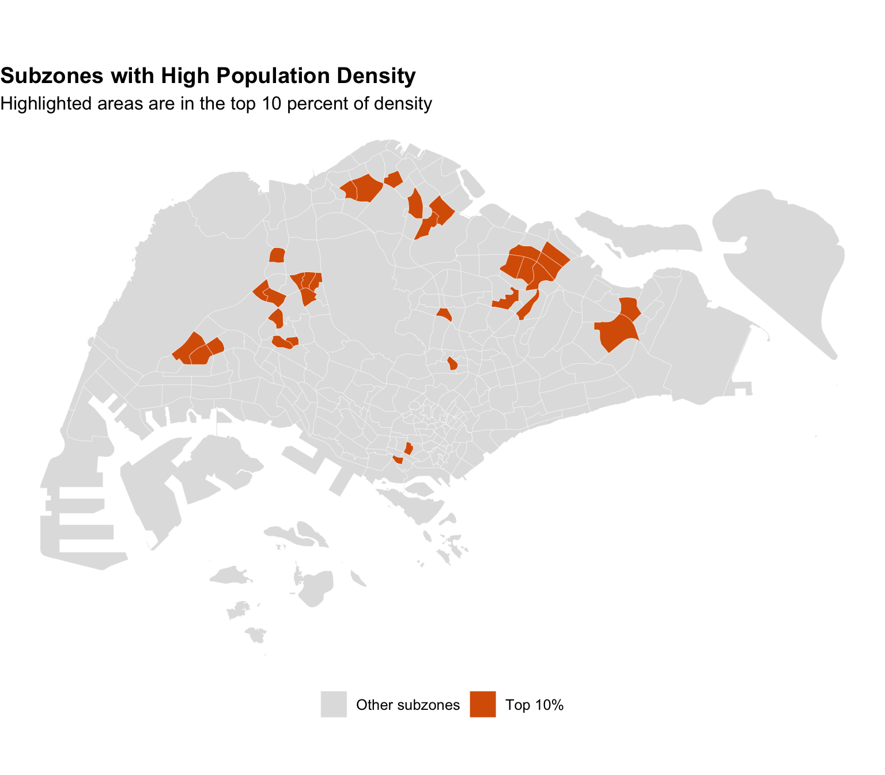

if (!requireNamespace("pacman", quietly = TRUE)) {
install.packages("pacman", repos = "https://cloud.r-project.org")
}
pacman::p_load(
tidyverse,
sf,
classInt,
scales,
patchwork,
knitr
)Hands-on_Ex09a
1 Choropleth Mapping with R
1.1 Overview
A choropleth map shades geographic areas according to a data value. It is useful when the variable belongs to an area, such as population by subzone, rate by district or count by planning area.
In this hands-on exercise, Singapore subzone geometry is joined with resident population data. The focus is on importing geospatial and aspatial data, preparing a spatial join key, building choropleth maps and comparing different classification methods.
By the end of this exercise, we should be able to:
- import shapefile data using
sf; - import population attribute data using
readr; - join attribute values to map polygons;
- build choropleth maps with
ggplot2; - compare equal interval, quantile and Jenks classification;
- map selected areas that meet a clear criterion.
1.2 Installing and launching R packages
1.3 Importing Data into R
1.3.1 The Data
Two data sources are used:
MP14_SUBZONE_WEB_PL.shpcontains Singapore Master Plan 2014 subzone boundaries.respopagesextod2011to2020.csvcontains population records by planning area, subzone, age group, sex, type of dwelling and year.
1.3.2 Importing geospatial data into R
shp_path <- "data/geospatial/MP14_SUBZONE_WEB_PL.shp"
if (!file.exists(shp_path)) {
stop("The subzone shapefile is missing from data/geospatial.")
}
mpsz <- st_read(shp_path, quiet = TRUE) %>%
st_make_valid()
glimpse(mpsz)Rows: 323
Columns: 16
$ OBJECTID <int> 1, 2, 3, 4, 5, 6, 7, 8, 9, 10, 11, 12, 13, 14, 15, 16, 17, …
$ SUBZONE_NO <int> 1, 1, 3, 8, 3, 7, 9, 2, 13, 7, 12, 6, 1, 5, 1, 1, 3, 2, 2, …
$ SUBZONE_N <chr> "MARINA SOUTH", "PEARL'S HILL", "BOAT QUAY", "HENDERSON HIL…
$ SUBZONE_C <chr> "MSSZ01", "OTSZ01", "SRSZ03", "BMSZ08", "BMSZ03", "BMSZ07",…
$ CA_IND <chr> "Y", "Y", "Y", "N", "N", "N", "N", "Y", "N", "N", "N", "N",…
$ PLN_AREA_N <chr> "MARINA SOUTH", "OUTRAM", "SINGAPORE RIVER", "BUKIT MERAH",…
$ PLN_AREA_C <chr> "MS", "OT", "SR", "BM", "BM", "BM", "BM", "SR", "QT", "QT",…
$ REGION_N <chr> "CENTRAL REGION", "CENTRAL REGION", "CENTRAL REGION", "CENT…
$ REGION_C <chr> "CR", "CR", "CR", "CR", "CR", "CR", "CR", "CR", "CR", "CR",…
$ INC_CRC <chr> "5ED7EB253F99252E", "8C7149B9EB32EEFC", "C35FEFF02B13E0E5",…
$ FMEL_UPD_D <date> 2014-12-05, 2014-12-05, 2014-12-05, 2014-12-05, 2014-12-05…
$ X_ADDR <dbl> 31595.84, 28679.06, 29654.96, 26782.83, 26201.96, 25358.82,…
$ Y_ADDR <dbl> 29220.19, 29782.05, 29974.66, 29933.77, 30005.70, 29991.38,…
$ SHAPE_Leng <dbl> 5267.381, 3506.107, 1740.926, 3313.625, 2825.594, 4428.913,…
$ SHAPE_Area <dbl> 1630379.27, 559816.25, 160807.50, 595428.89, 387429.44, 103…
$ geometry <GEOMETRY [m]> POLYGON ((31495.56 30140.01..., POLYGON ((29092.28…st_crs(mpsz)Coordinate Reference System:
User input: SVY21
wkt:
PROJCRS["SVY21",
BASEGEOGCRS["SVY21[WGS84]",
DATUM["World Geodetic System 1984",
ELLIPSOID["WGS 84",6378137,298.257223563,
LENGTHUNIT["metre",1]],
ID["EPSG",6326]],
PRIMEM["Greenwich",0,
ANGLEUNIT["Degree",0.0174532925199433]]],
CONVERSION["unnamed",
METHOD["Transverse Mercator",
ID["EPSG",9807]],
PARAMETER["Latitude of natural origin",1.36666666666667,
ANGLEUNIT["Degree",0.0174532925199433],
ID["EPSG",8801]],
PARAMETER["Longitude of natural origin",103.833333333333,
ANGLEUNIT["Degree",0.0174532925199433],
ID["EPSG",8802]],
PARAMETER["Scale factor at natural origin",1,
SCALEUNIT["unity",1],
ID["EPSG",8805]],
PARAMETER["False easting",28001.642,
LENGTHUNIT["metre",1],
ID["EPSG",8806]],
PARAMETER["False northing",38744.572,
LENGTHUNIT["metre",1],
ID["EPSG",8807]]],
CS[Cartesian,2],
AXIS["(E)",east,
ORDER[1],
LENGTHUNIT["metre",1,
ID["EPSG",9001]]],
AXIS["(N)",north,
ORDER[2],
LENGTHUNIT["metre",1,
ID["EPSG",9001]]]]1.3.3 Importing attribute data into R
pop_path <- "data/aspatial/respopagesextod2011to2020.csv"
if (!file.exists(pop_path)) {
stop("The population CSV is missing from data/aspatial.")
}
pop_raw <- read_csv(pop_path, show_col_types = FALSE)
glimpse(pop_raw)Rows: 984,656
Columns: 7
$ PA <chr> "Ang Mo Kio", "Ang Mo Kio", "Ang Mo Kio", "Ang Mo Kio", "Ang Mo K…
$ SZ <chr> "Ang Mo Kio Town Centre", "Ang Mo Kio Town Centre", "Ang Mo Kio T…
$ AG <chr> "0_to_4", "0_to_4", "0_to_4", "0_to_4", "0_to_4", "0_to_4", "0_to…
$ Sex <chr> "Males", "Males", "Males", "Males", "Males", "Males", "Males", "M…
$ TOD <chr> "HDB 1- and 2-Room Flats", "HDB 3-Room Flats", "HDB 4-Room Flats"…
$ Pop <dbl> 0, 10, 30, 50, 0, 0, 40, 0, 0, 10, 30, 60, 0, 0, 40, 0, 0, 10, 30…
$ Time <dbl> 2011, 2011, 2011, 2011, 2011, 2011, 2011, 2011, 2011, 2011, 2011,…1.3.4 Data Preparation
The map uses total population in 2020. The population file is aggregated by planning area and subzone, then joined to the subzone polygons.
pop_2020 <- pop_raw %>%
filter(Time == 2020) %>%
group_by(
PA = str_to_upper(PA),
SZ = str_to_upper(SZ)
) %>%
summarise(Pop = sum(Pop, na.rm = TRUE), .groups = "drop")
mpsz_clean <- mpsz %>%
mutate(
PLN_AREA_N = str_to_upper(PLN_AREA_N),
SUBZONE_N = str_to_upper(SUBZONE_N)
)
mpszpop <- mpsz_clean %>%
left_join(
pop_2020,
by = c("PLN_AREA_N" = "PA", "SUBZONE_N" = "SZ")
) %>%
mutate(
Pop = replace_na(Pop, 0),
area_sqkm = as.numeric(st_area(.)) / 1000000,
pop_density = if_else(area_sqkm > 0, Pop / area_sqkm, NA_real_)
)mpszpop %>%
st_drop_geometry() %>%
select(PLN_AREA_N, SUBZONE_N, REGION_N, Pop, area_sqkm, pop_density) %>%
arrange(desc(Pop)) %>%
head(10) %>%
knitr::kable(format = "html", digits = 1)| PLN_AREA_N | SUBZONE_N | REGION_N | Pop | area_sqkm | pop_density |
|---|---|---|---|---|---|
| TAMPINES | TAMPINES EAST | EAST REGION | 131140 | 4.3 | 30217.8 |
| WOODLANDS | WOODLANDS EAST | NORTH REGION | 99090 | 2.6 | 38806.1 |
| BEDOK | BEDOK NORTH | EAST REGION | 82010 | 3.2 | 25598.8 |
| TAMPINES | TAMPINES WEST | EAST REGION | 79720 | 3.5 | 22939.6 |
| JURONG WEST | YUNNAN | WEST REGION | 67700 | 2.2 | 30684.8 |
| JURONG WEST | JURONG WEST CENTRAL | WEST REGION | 63820 | 1.4 | 45438.5 |
| SENGKANG | SENGKANG TOWN CENTRE | NORTH-EAST REGION | 61880 | 1.5 | 42514.4 |
| YISHUN | YISHUN EAST | NORTH REGION | 60710 | 1.8 | 34355.9 |
| SENGKANG | RIVERVALE | NORTH-EAST REGION | 59750 | 1.6 | 38080.7 |
| SENGKANG | FERNVALE | NORTH-EAST REGION | 58840 | 2.4 | 24608.1 |
1.4 Choropleth Mapping Geospatial Data
1.4.1 Plotting a choropleth map quickly
ggplot(mpszpop) +
geom_sf(aes(fill = Pop), colour = "white", linewidth = 0.08) +
scale_fill_gradient(
low = "#F2F0E6",
high = "#2A6F6F",
labels = comma
) +
labs(
title = "Singapore Resident Population by Subzone, 2020",
fill = "Population"
) +
theme_void(base_size = 12) +
theme(
plot.title = element_text(face = "bold"),
legend.position = "right"
)
ggplot(mpszpop) +
geom_sf(aes(fill = Pop), colour = "white", linewidth = 0.08) +
scale_fill_gradient(
low = "#F2F0E6",
high = "#2A6F6F",
labels = comma
) +
labs(
title = "Singapore Resident Population by Subzone, 2020",
fill = "Population"
) +
theme_void(base_size = 12)This first map uses a continuous colour scale. It is simple, but it can hide important differences when the variable is skewed.
1.4.2 Data classification methods
Different classification methods can lead to different visual impressions. The helper function below creates map classes using classInt.
make_class <- function(x, style, n = 5) {
values <- x[!is.na(x)]
breaks <- classIntervals(values, n = n, style = style)$brks %>%
unique()
cut(
x,
breaks = breaks,
include.lowest = TRUE,
dig.lab = 10
)
}
mpszpop <- mpszpop %>%
mutate(
equal_class = make_class(Pop, "equal"),
quantile_class = make_class(Pop, "quantile"),
jenks_class = make_class(Pop, "jenks")
)plot_choro_class <- function(data, class_col, title) {
ggplot(data) +
geom_sf(aes(fill = .data[[class_col]]), colour = "white", linewidth = 0.06) +
scale_fill_brewer(palette = "YlGnBu", na.value = "grey90") +
labs(title = title, fill = NULL) +
theme_void(base_size = 10) +
theme(
plot.title = element_text(face = "bold", size = 11),
legend.position = "bottom",
legend.text = element_text(size = 6)
)
}plot_choro_class(mpszpop, "equal_class", "Equal Interval") +
plot_choro_class(mpszpop, "quantile_class", "Quantile") +
plot_choro_class(mpszpop, "jenks_class", "Jenks Natural Breaks")
The same population values are used in all three maps. The change in appearance comes from the classification method, not from the underlying data.
1.4.3 Colour Scheme
Sequential palettes work well for ordered numerical values. In the map below, a single-hue scale is used for population density so dense areas stand out.
ggplot(mpszpop) +
geom_sf(aes(fill = pop_density), colour = "white", linewidth = 0.08) +
scale_fill_viridis_c(
option = "mako",
labels = label_number(scale_cut = cut_short_scale()),
na.value = "grey90"
) +
labs(
title = "Population Density by Subzone, 2020",
subtitle = "Density adjusts population count by polygon area",
fill = "People per sq km"
) +
theme_void(base_size = 12) +
theme(
plot.title = element_text(face = "bold"),
legend.position = "right"
)
1.5 Mapping spatial objects meeting a selection criterion
The map below highlights subzones in the top 10 percent of population density. This is a small extension from a general choropleth map to a targeted selection map.
density_cutoff <- quantile(mpszpop$pop_density, 0.90, na.rm = TRUE)
dense_subzones <- mpszpop %>%
mutate(
density_group = if_else(pop_density >= density_cutoff, "Top 10%", "Other subzones")
)ggplot(dense_subzones) +
geom_sf(aes(fill = density_group), colour = "white", linewidth = 0.08) +
scale_fill_manual(
values = c("Top 10%" = "#D95F02", "Other subzones" = "grey88")
) +
labs(
title = "Subzones with High Population Density",
subtitle = "Highlighted areas are in the top 10 percent of density",
fill = NULL
) +
theme_void(base_size = 12) +
theme(
plot.title = element_text(face = "bold"),
legend.position = "bottom"
)
1.6 My Extension: Planning area summary
The map tells us where population is concentrated, but a table makes it easier to identify the largest planning areas.
mpszpop %>%
st_drop_geometry() %>%
group_by(PLN_AREA_N, REGION_N) %>%
summarise(
population = sum(Pop, na.rm = TRUE),
area_sqkm = sum(area_sqkm, na.rm = TRUE),
density = population / area_sqkm,
.groups = "drop"
) %>%
arrange(desc(population)) %>%
head(12) %>%
mutate(
population = comma(population),
area_sqkm = round(area_sqkm, 2),
density = comma(round(density))
) %>%
knitr::kable(format = "html")| PLN_AREA_N | REGION_N | population | area_sqkm | density |
|---|---|---|---|---|
| BEDOK | EAST REGION | 277,720 | 21.73 | 12,779 |
| JURONG WEST | WEST REGION | 263,050 | 14.68 | 17,918 |
| TAMPINES | EAST REGION | 260,380 | 20.97 | 12,416 |
| WOODLANDS | NORTH REGION | 255,350 | 13.61 | 18,757 |
| SENGKANG | NORTH-EAST REGION | 249,670 | 10.60 | 23,547 |
| HOUGANG | NORTH-EAST REGION | 228,130 | 13.93 | 16,373 |
| YISHUN | NORTH REGION | 221,940 | 20.87 | 10,632 |
| CHOA CHU KANG | WEST REGION | 192,480 | 6.12 | 31,465 |
| PUNGGOL | NORTH-EAST REGION | 174,700 | 9.38 | 18,630 |
| ANG MO KIO | NORTH-EAST REGION | 162,670 | 13.94 | 11,668 |
| BUKIT BATOK | WEST REGION | 158,510 | 11.13 | 14,238 |
| BUKIT MERAH | CENTRAL REGION | 151,700 | 14.46 | 10,489 |
1.7 Key Takeaways
- Choropleth mapping requires a reliable join between attribute data and polygon geometry.
- Classification method affects interpretation, so the choice should match the analytical purpose.
- Population density can tell a different story from total population because polygon areas differ.
- Selection maps are useful when the goal is to highlight areas that meet a condition.
1.8 References
- R4VA chapter: https://r4va.netlify.app/chap21